Sweatwell
Customise!
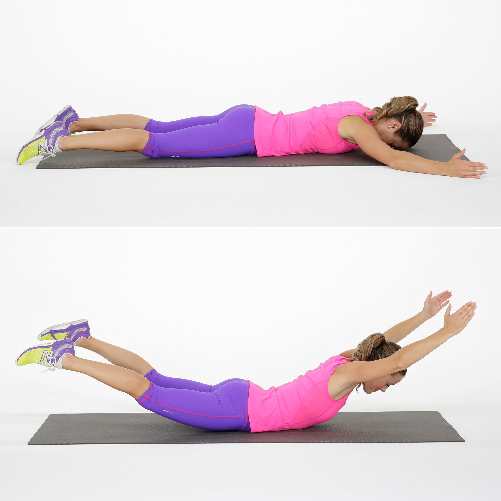
Duration : 30s
To begin, lie straight and face down on the floor or exercise mat. Your arms should be fully extended in front of you. This is the starting position. Simultaneously raise your arms, legs, and chest off of the floor and hold this contraction for 2 seconds. Tip: Squeeze your lower back to get the best results from this exercise. Remember to exhale during this movement. Note: When holding the contracted position, you should look like superman when he is flying. Slowly begin to lower your arms, legs and chest back down to the starting position while inhaling.
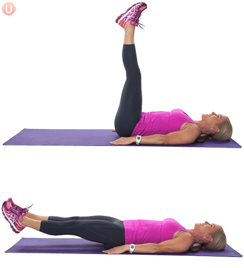
Duration : 60s
Raise both legs toward the ceiling. Breathe in and tighten your abs. Exhale and slowly lower your legs until they’re about four inches above the floor (or as low as you can go without lifting the small of your back). Pause and breathe in. Breathe out as you raise your legs to the starting position.
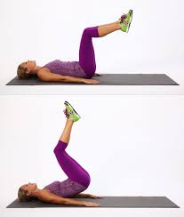
Duration : 60s
Lie down on the floor with your legs fully extended and arms to the side of your torso with the palms on the floor. Your arms should be stationary for the entire exercise. Move your legs up so that your thighs are perpendicular to the floor and feet are together and parallel to the floor. This is the starting position. While inhaling, move your legs towards the torso as you roll your pelvis backwards and you raise your hips off the floor. At the end of this movement your knees will be touching your chest. Hold the contraction for a second and move your legs back to the starting position while exhaling.
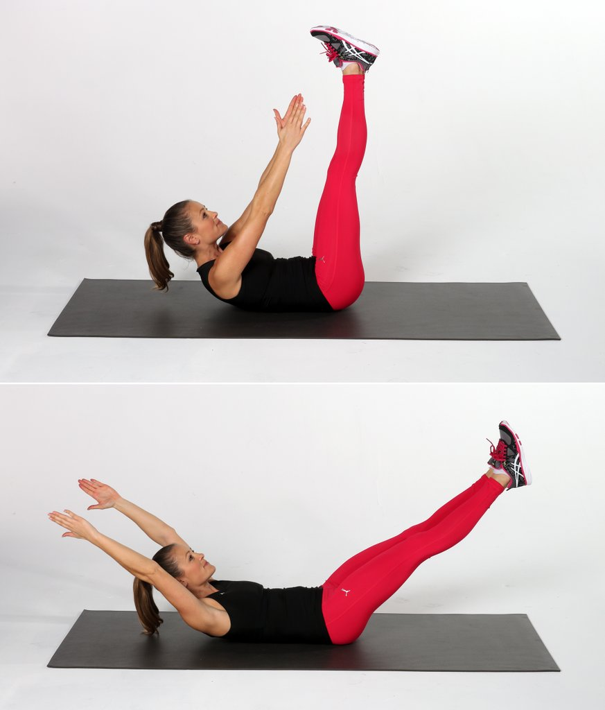
Duration : 60s
Lie on your back, and lift your legs and arms up so they are extended toward the ceiling. Lift your upper back off the floor, reaching your hands toward your feet. Lower your legs toward the floor while reaching your arms overhead, keeping your shoulders off the mat and lower back pressed into the mat.
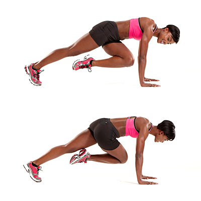
Duration : 60s
Begin in a pushup position, with your weight supported by your hands and toes. Flexing the knee and hip, bring one leg until the knee is approximately under the hip. This will be your starting position. Explosively reverse the positions of your legs, extending the bent leg until the leg is straight and supported by the toe, and bringing the other foot up with the hip and knee flexed.
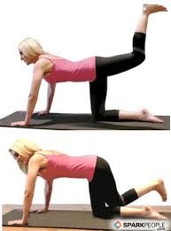
Duration : 60s (30s x 2)
To begin, lie down with your back pressed against the floor or on an exercise mat (optional). Your arms should be fully extended to the sides with your palms facing down. Note: The arms should be stationary the entire time. With a slight bend at the knees, lift your legs up so that your heels are about 6 inches off the ground. This is the starting position. Now lift your left leg up to about a 45 degree angle while your right leg is lowered until the heel is about 2-3 inches from the ground. Switch movements by raising your right leg up and lowering your left leg. Remember to breathe while performing this exercise.
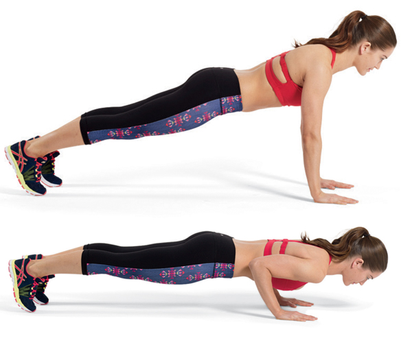
Duration : 30s
Position yourself in a plank position, supporting your body with your toes and place your hands underneath your shoulders with elbows extended. Keep your abs engage and prevent letting your hips sag. Lower your chest to the floor and hold for 30 seconds. Straighten up to starting position.
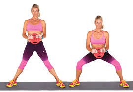
Duration : 30s
Begin by loading the bar appropriately and stepping under it, placing it across the back of the shoulders slightly below the rear deltoids. Squeeze your shoulder blades together and rotate your elbows forward, attempting to bend the bar across your shoulders. Remove the bar from the rack, creating a tight arch in your lower back, and step back into position. Place your feet in a wider-than-shoulder-width stance with the toes slightly pointed out and knees slightly bent. Keep your neck neutral. This will be your starting position. Descend into a squat by pushing your hips and butt backwards. Continue down until the upper legs are at or just below parallel to the floor. Inhale as you perform this portion of the movement. Drive up through your heels, pushing your feet and knees out. Continue upward, maintaining tightness head to toe, until you have returned to the starting position.
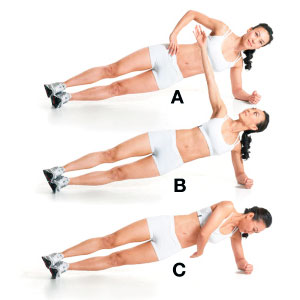
Duration : 30s
Get in side plank position, resting on your right forearm (elbow under shoulder) and the outside of your right foot (stack your feet or scissor them on the floor). Lift your hips and press your arm into the floor so your body is straight and not sinking down. Extend your left arm up. Keeping your body raised, reach your left arm under you. Hold for one count; Return to the starting position.Switch sides.
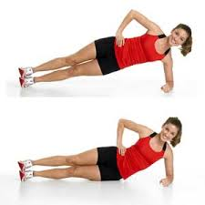
Duration : 60s (30s x 2)
Start by lying on your right side with your legs straight and your left leg stacked directly on top of your right. Bend your right elbow and place is directly under your shoulder. Align your head with your spine and keep your hips and right knee in contact with the floor. Exhale as you slowly lift your hips and knees off the floor, keeping your abdominals engaged to brace your spine. The side of your right foot should stay on the floor. Keep your head aligned with your spine and your right elbow positioned directly under your shoulder. Continue to breathe, keeping your abdominals strong while dropping your hips a few inches (several centimetres), holding for one deep breath, in and out, then pressing back up again. After the desired number of repetitions, gently return to your starting position and repeat on the other side.
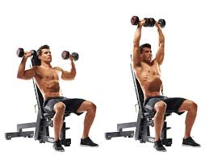
Reps : 15
While holding a dumbbell in each hand, sit on a military press bench or utility bench that has back support. Place the dumbbells upright on top of your thighs. Now raise the dumbbells to shoulder height one at a time using your thighs to help propel them up into position. Make sure to rotate your wrists so that the palms of your hands are facing forward. This is your starting position. Now, exhale and push the dumbbells upward until they touch at the top. Then, after a brief pause at the top contracted position, slowly lower the weights back down to the starting position while inhaling.
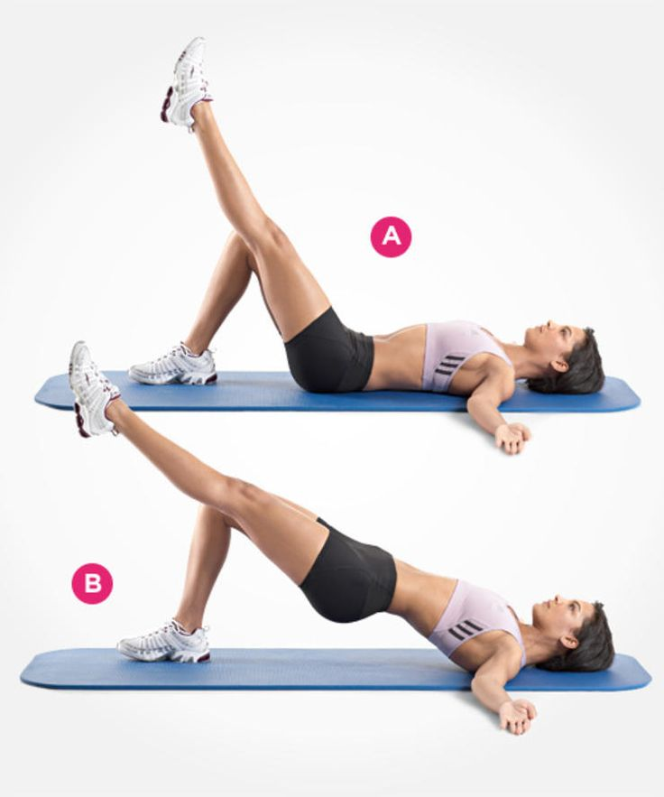
Duration : 60s (15s x 4)
Lay down with your back flat on the floor and your arms on your side. Place the small ball under your right foot. Point your left leg straight up to the ceiling. Rotate your leg in small circles clockwise and then counter clockwise. Lower your left leg down onto the ball and then repeat the motion with your right leg for the desired amount of time.
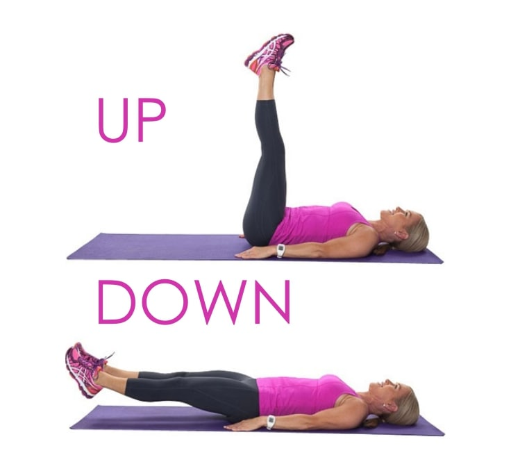
Duration : 60s
Lie faceup on the floor with your legs straight and your palms facing down. This is the starting position. Without bending your legs, lift them toward the ceiling until your hips just leave the floor. Then lower your legs down to the starting position again.
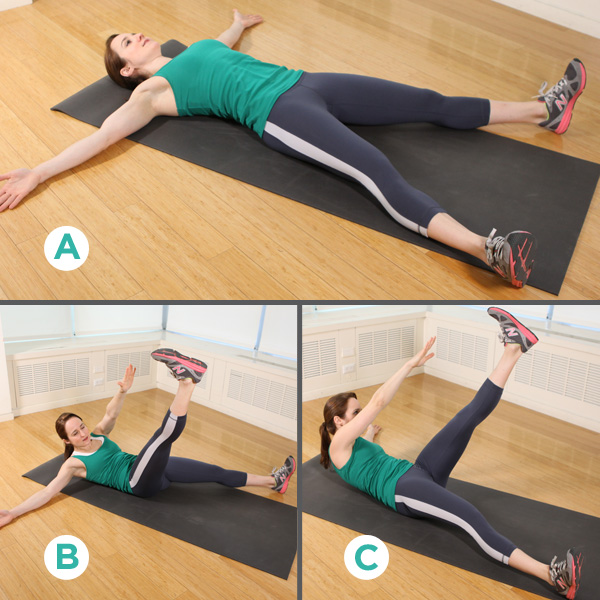
Duration : 60s
Lay flat on your back. Extend your arms over your head and spread your legs out so that your body forms an "X" on the ground. This is your starting position. Simultaneously lift one arm and the opposing leg, reaching across and touching your fingers to your ankle. Exhale during the crunch. Keep the arm and leg not being used on the ground. Inhale and slowly lower back to staring position. Repeat the motion using the opposite arm and leg.